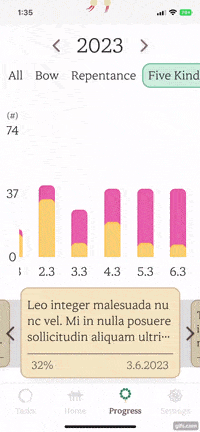
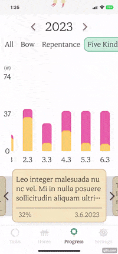

- Supports different few types of players. Themes are based on task mode(yellow) and regardless of task(pink). Mantras are based on bow mode(count) and other mantras(lyrics).
- The proximity sensor counts when it detects a head. To prevent duplication of bow count, it was developed to detect when the top right corner lotus indicator is fully loaded.
- If a device doesn't support proximity sensor, go to settings and set the timer.
- The music player calculates the position of the title and play button and applies the position to the minimized and maximized player size.
- Dismissible music player.
- lock progress bar, loop mode, set speed.
Paramita Widget Description
Music Player


Background Mode


- Based on the background action, it interacts with the local db to track progress of tasks or regardless of tasks.
- Play, pause, next song, previous song, seek duration in the background.
- Reflect the number of iterations of the task.
Live Lyrics

- Improved performance to updating current duration once second is changed using rxdart.
- Scroll to a current lyric phrase. Flutter doesn't support scrollToItem currently.
- Previous, current, next lyric phrases have different text effect styles.
Progress Bar

- Implemented it with custom painter and gesture.
- Support two different types of process bars.
- Calculate the position of the indicator according to the center of the user's gesture.
- Seek duration box follows progress bar's indicator and calculate not to overflow at screen edges.
- Grow, shrink, and align according to the size of the music player.
Floating Help Indicator

- Help is supported on all interactive screens.
- Help Indicator position can be changed.
- Once help is activated, it grows to the size of the screen and hides bottom navigation bar and active music player.
- Drew arrow with custom painter with animation.
Bar Chart
- Daily progress(tasks and regardless of task) is saved until midnight. All progress resets each day.
- Show how much the user has completed on that day in each year.
- Animate once the values are changed.
- The indicator follows where the user taps.
Text Reader

- It's records of the user's feeling and thoughts in the reflection journal.
- Show the date, percentage of completion, and reflection of that day.
- Depending on the scroll position, the left wall indicator is applied.
- When the user taps the left month, the reader moves to the corresponding month.
Tab Indicator
 

- Support horizontal and vertical way.
- Automatically resize and align to the child Widget.
Bottom Sheet


- The height of the bottom sheet adapts to the height of the content.
- If the height of the content is greater than the height of the bottom sheet, scrolling is applied automatically